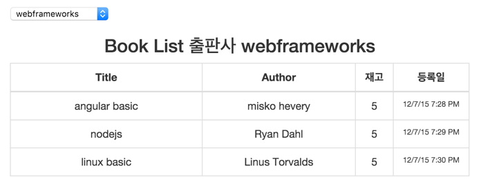
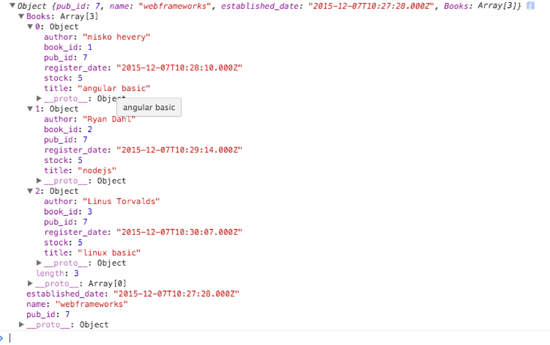
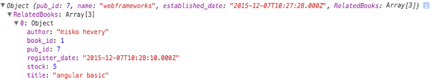
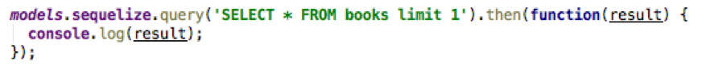
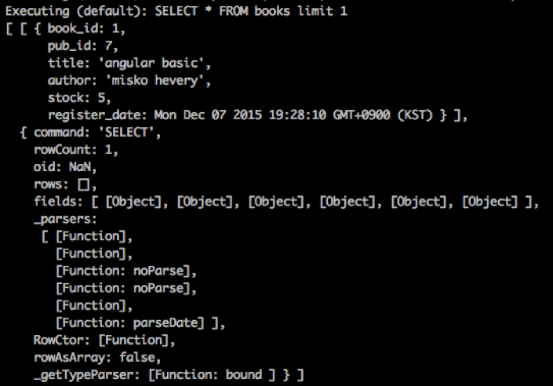
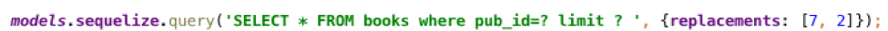
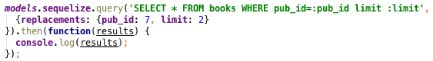

ExpressJS에서 Sequelize 사용하기3
Associations
예제의 다음 기능은 출판사 별로 등록된 책을 보여주고 새로운 서적을 books테이블에 등록하는 일이다. publisher테이블에 이어 books테이블도 만들어 보자. SQL문으로는 다음과 같다.
CREATE TABLE IF NOT EXISTS books (
book_id SERIAL PRIMARY KEY,
pub_id INTEGER REFERENCES publisher NOT NULL,
title VARCHAR(64) NOT NULL,
author VARCHAR(16) NOT NULL,
stock SMALLINT NOT NULL DEFAULT 1,
register_date TIMESTAMP WITH TIME ZONE NOT NULL DEFAULT NOW()
);
books테이블의 pubid는 책의 출판사ID이고 publisher테이블의 pubid를 foreign key로 갖는다. Sequelize의 model define으로 표현하면 이렇게 될 것이다.
sequelize.define('Books', {
book_id: {type: DataTypes.INTEGER, primaryKey: true, autoIncrement: true},
pub_id: {type: DataTypes.INTEGER, allowNull: false, references: {model: models.Publisher, key: 'pub_id'}},
title: {type: DataTypes.STRING(64), allowNull: false},
author: {type: DataTypes.STRING(16), allowNull: false},
stock: {type: DataTypes.INTEGER, defaultValue: 1},
register_date: {type: DataTypes.DATE, defaultValue: DataTypes.NOW}
}, {
classMethods: {},
tableName: 'books',
freezeTableName: true,
underscored: true,
timestamps: false
});여기서 publisher 테이블과 다른 점은 books테이블의 column하나가 reference라는 것이다. 출판사는 여러개의 책을 출판하므로 1:N의 관계가 성립된다. Sequelize에서는 model간의 관계를 정의하는 4가지의 association 메소드가 있다. (hasMany, hasOne, belongsTo, belongsToMany) 이 중에서 이번 예제에서 필요한 hasMany 메소드부터 하나씩 살펴보도록하자. association 설정은 다음과 같이 한다.
db.Publisher.hasMany(db.Books, {foreignKey: 'pub_id'});Publisher model과 Books model이 1:N으로 관계되어있다는 뜻이다. hasMany는 1:N관계를 맺을 때 사용하는 메소드이다. association관련 메소드의 option항목은 대표적으로 foreignKey, as가 있다. foreignKey에는 foreignKey로 사용되는 column의 name이 들어간다. as는 alias를 주는 옵션인데 곧 예제와 함께 확인해보자.
예제 화면의 books탭으로 들어가면 다음과 같은 화면을 볼 수 있다.

webframeworks 출판사에 미리 등록해놓은 책 3권을 확인 할 수 있다. 각 출판사별로 발행한 책을 보려면 다음과 같은 Sequelize문을 사용한다.
models.Publisher.find({
where: {pub_id: options.pub_id},
include: {model: models.Books}
}).then(function(result) {
res.json(result);
}).catch(function(err){
//TODO: error handling
});이전 챕터의 find문과 다른 점이 있다면 include옵션이 들어가 있다는 점이다. include옵션은 association과 궁합이 맞는 옵션이다. model의 association의 설정에 따라 left join을 수행하며 종속된 row의 결과를 object의 attribute로 만들어준다. 위 결과에 대한 반환 JSON을 브라우저에서 살펴보면 훨신 더 이해가 잘 될 것이다.

그림을 보면 webframeworks출판사 ID 7번에 종속된 books의 내역을 Books라는 Array로 내려주는것을 확인 할 수 있다. (이것을 eager loading이라 한다.) Books라는 이름은 model name을 그대로 따라간다. Association을 설정하면 이와같이 include 옵션을 통해서 left join을 할 수 있다. 그렇다면 books테이블과 같이 N쪽에 속하는 child모델에서의 상세 설정은 할 수 없는걸까? 결론은 할 수 있다. include옵션은 그 내부에 또다른 옵션을 갖는다.
예제와 함께 include의 옵션들에 대해서 알아보자.
1) model: eager loading을 하고자 하는 model ex)include: {model: models.Books}
2) as: alias의 기능을 한다.
ex) 만약 publisher와 books의 association설정을 다음과 같이 하고 db.Publisher.hasMany(db.Books, {foreignKey: 'pub_id', as: 'RelatedBooks'});
Sequelize find를 다음과 같이 실행하면 그 아래와 같이 된다.
models.Publisher.find({
where: {pub_id: options.pub_id},
include: [{model: models.Books, as: 'RelatedBooks'}]
}).then(function(result) {});
이전에는 model name과 똑같이 Books로 리턴되었는데 as로 지정하고 실행하니
RelatedBooks로 리턴되었다. as는 이처럼 alias기능을 한다. 보통 이름을 짧게 만들때 사용한다.
3) where: child테이블의 where조건에 대한 옵션이다.
include된 child모델의 book_id가 2인 조건을 넣으면 다음과 같다.
models.Publisher.find({
where: {pub_id: options.pub_id},
include: [{model: models.Books, where: {book_id: 2}}]
}).then(function(result) {});리턴 결과는 이렇다. where조건이 없을때에는 3개의 books정보를 가져왔지만 지금은 books_id가
2인 row의 결과만 리턴한다.

4) attributes: child모델의 column을 select할때 사용한다. ex) child모델에 다음과 같이 attributes를 추가하면
models.Publisher.find({
where: {pub_id: options.pub_id},
include: [{model: models.Books, attributes: ['title', 'author']}]
}).then(function(result) {});리턴결과는 다음과 같다. Books에 title과 author정보만담겨서 내려온다.

5) required: 이 옵션이 만약 true라면 inner join으로 동작하게 된다.
6) limit : child 모델에 대한 limit가 적용된다
hasMany가 1:N관계와 관련이 있다면 hasOne, belongsTo는 1:1관계 belongsToMany는 N:M관계와 관련이 있다. 기본적인 사용방법은 hasMany와 다르지 않다. hasOne과 belongsTo는 똑같이 1:1 relation을 대표하지만 belongsTo의 경우에는 child모델의 입장에서 parent 모델의 정보가 필요할때 사용한다. belongsTo와 belongsToMany의 경우에는 association을 설정할 때 targetKey옵션을 사용할 수 있다. 예를 들면 다음과 같이 말이다.
db.Books.belongsTo(db.Publisher, {foreignKey: 'pub_id', targetKey: 'pub_id'});위의 예시는 둘다 pubid라는 동일한 column을 가졌기 때문에 foreignKey와 targetKey 옵션이 같지만 만약에 books테이블이 pubid가 아니라 publisher_id라면 이렇게 사용할 수 있다.
db.Books.belongsTo(db.Publisher, {foreignKey: 'publisher_id', targetKey: 'pub_id'});즉 reference column과 referenced column의 이름이 같지 않을때 사용하는 옵션이다.
Raw Query
Sequelize는 지금까지 우리가 사용한 model로부터 작업하는 방법외에도 Raw Query SQL문을 통해 쿼리를 실행할 수 있는 기능도 있다. 복잡한 쿼리나 ORM형식으로 변환이 힘들다고 판단되는 경우에 사용할 수 있는 옵션이다. Raw Query실행은 다음과 같이 할 수 있다.

query 메소드는 Raw Query를 실행하는 메소드인데 첫 번째 파라미터는 Query string, 두번째 파라미터는 옵션이 들어간다. 위와 같이 books 테이블의 row 1개만 가져오는 쿼리를 실행하면 다음과 같은 결과를 리턴한다.

결과로 array를 리턴하는데 첫번째 인덱스의 값은 query결과 array고 두번째 인덱스의 값은 메타데이터 정보이다. 순수하게 query결과만 받아보고 싶다면 옵션 type에 QueryType을 지정하면된다.

type을 SELECT로 지정하고 query를 실행하면 이전과는 달리 query결과에 대한 값만 받을 수 있다.

또 다른 옵션으로는 replacements 옵션이 있다. SQL문에 파라미터를 넣어서 유동적인 query를 만들 수 있게 하는 옵션이다. 예시는 다음과 같다.

Query문에 ‘?’를 넣으면 그곳에 값을 치환해서 넣을 수 있다. 위의 쿼리문은 ‘SELECT * FROM books pub_id=7 limit 2’ 로 치환된다. 물음표의 순서대로 replacements옵션 array의 인덱스0부터 차례대로 치환된다. replacements는 array형태일 수도 있지만 object형태로도 쓰일 수 있다. object형태로 사용될 때는 쿼리문의 변화가 필요하다 다음과 같이 말이다.

?(물음표) 대신 :(콜론) 다음에 파라미터 이름을 적는 것이다. :name 에 해당하는 부분은 replacements옵션 object의 값과 대응된다. 결과는 똑같이 리턴된다. sequelize에서 Raw Query사용법에 대해 더 궁금한게 있다면 이곳을 참조하기 바란다. sequelize-raw-query
이번 챕터에서는 model간에 association을 맺어주는 방법과 그 association을 통해서 join작업을 하는 방법 그리고 마지막으로는 raw query사용법에 대해서 알아보았다. 간단한 예시 위주로 알아보았지만 기본적인 옵션들을 조합한다면 더 많은 작업을 해낼 수 있을것이다. 다음 챕터에서는 Sequelize의 hooks와 Promise chaining을 이용한 트랜잭션 + 복수쿼리 실행방법에 대하여 알아보자.